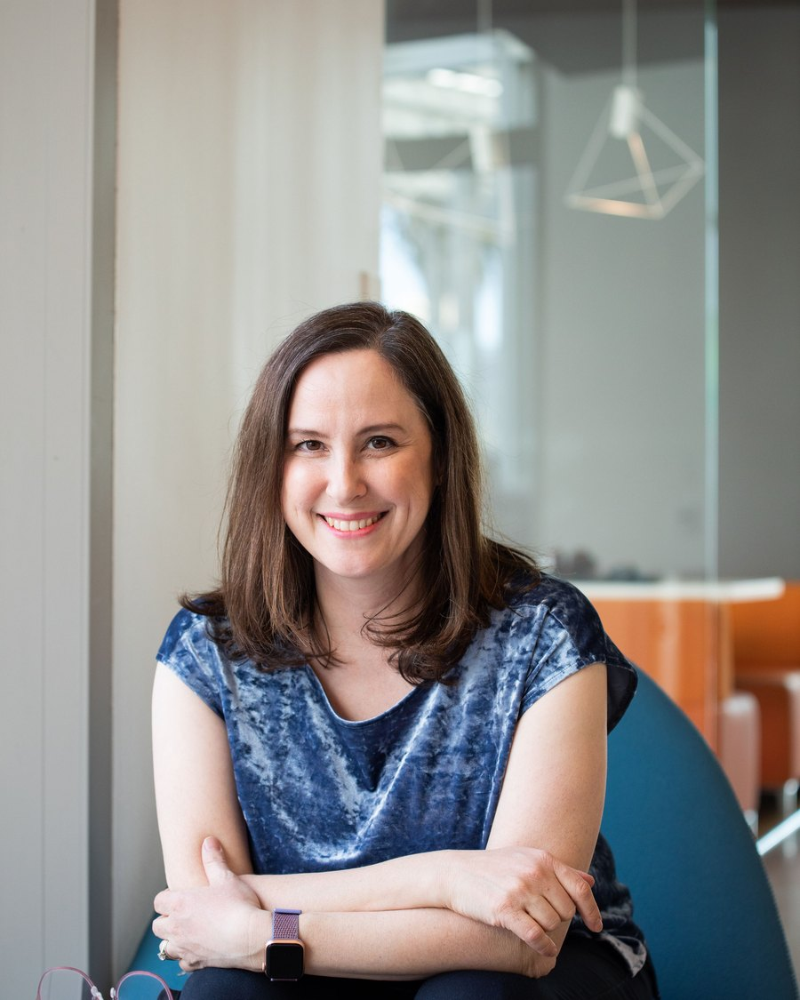

About
Meredith
Alexander Kunz
Writer and communications leader. I work at the intersection of AI innovation, strategy, and technology storytelling.
About
Bio

I work at the intersection of AI innovation, strategy, and technology storytelling. At Adobe, I lead research and innovation communications — a program I built from the ground up. I lead a communications team that partners with researchers across a world-class lab — generative and agentic AI, LLMs, computer vision, video, audio, and 3D — to tell the story of their work.
Much of that work is strategy rather than communications in the traditional sense: building systems that carry research breakthroughs into executive alignment, product influence, and public impact. I joined as Adobe Research's founding science writer and have been promoted five times in eight years — growing the lab's social reach by more than 700%, directing executive messaging that helped secure multi-million-dollar funding for the generative AI roadmap, and overseeing a program that helped transfer research into Firefly, Photoshop, Lightroom, Premiere Pro, and Acrobat.
Before Adobe, I worked as a journalist and communications strategist covering technology and research. My writing has appeared in Newsweek, the San Francisco Chronicle, and Stanford Magazine. At Stanford, my work supported major interdisciplinary research initiatives and philanthropic investments of more than $10 million.
Alongside this work, I write and speak on ethics and practical philosophy. I'm co-author of Beyond Stoicism with Massimo Pigliucci and Gregory Lopez, published in 2025 and now out in Spanish, with a Chinese edition on the way. I also host The Philosopher's Compass podcast and work as a certified executive coach.
- Books
- Beyond Stoicism (2025) · Live Like a Philosopher, UK edition · Words That Carry Us
- Podcast
- The Philosopher's Compass, host
- Writing
- The Stoic Mom, creator and author since 2016 — on Substack since 2022
- Previously
- Stanford University · Journalist and communications strategist covering technology and research
- Education
- Harvard University, A.B. History & Literature, summa cum laude, Phi Beta Kappa · Stanford University, M.A. History · École Normale Supérieure, Paris
- Affiliations
- Adobe · Centre for the Study and Application of Stoicism, Royal Holloway · National Association of Science Writers
- Credentials
- Certified Professional Co-Active Coach (CPCC) · Associate Certified Coach (ACC)
How can people navigate complexity with greater creativity, humanity, and critical thinking? The question behind all of it — research, AI, philosophy